Практическое руководство для Bambu Lab A1 mini: где какая опция, что она делает, как опции влияют друг на друга, как калибровать пластик и что крутить при каждом дефекте.
Числа «по умолчанию» — из системного пресета 0.20mm Standard @BBL A1M. На скриншотах открыт реальный проект, поэтому часть полей там изменена: Studio красит такие поля оранжевым. Стоковые значения — в таблицах.
Всё, что Studio знает о печати, лежит в трёх наборах настроек — пресетах. Понять, в каком из трёх живёт параметр, — половина ориентирования в слайсере.
| Пресет | Про что | Что внутри |
|---|---|---|
| Printer (машина) Bambu Lab A1 mini 0.4 nozzle | железо, одно на все печати | размер стола, стартовый G-code, ретракт (откат), Z-hop, wipe |
| Filament (катушка) SUNLU PLA @BBL A1M | физика конкретного пластика | температура сопла и стола, Flow ratio, Max volumetric speed, вентилятор и охлаждение, усадка |
| Process (в UI подписан «Process», по сути — «как печатать эту модель») 0.20mm Standard @BBL A1M | выбор под конкретную модель | высота слоя, стенки, заполнение, поддержки, скорости, кайма, шов — всё на пяти вкладках Quality / Strength / Speed / Support / Others |
Суффикс @BBL A1M в имени — привязка к принтеру: Studio показывает только совместимые пресеты. Если сменится принтер, весь список пресетов «сломается» (ниже про MakerWorld).
«Open in Bambu Studio» открывает полный 3MF автора со всеми тремя уровнями. Автор утки печатал на P1S: Studio переключилась на P1S, и все наши пресеты @BBL A1M посерели в разделе Unsupported. Первопричина — принтер, не филамент.
| Уровень | Чей брать |
|---|---|
| Printer | свой — менять первым, иначе свои пресеты недоступны |
| Filament | свой, откалиброванный — авторский сделан для другой катушки на другом принтере |
| Process | база своя (… @BBL A1M) + правки автора поверх: стенки, поддержки. Это про модель, автор знает, зачем они. Сначала проверь на странице модели, нет ли профиля под A1 mini. |
Числа на вкладке Speed — это желаемые скорости. Реальную ограничивают ещё три вещи, и чаще всего главная из них — Max volumetric speed из пресета филамента.
MVS (Max volumetric speed, мм³/с) — сколько пластика в секунду сопло успевает расплавить. Выше этого предела стенка рыхлеет и матовеет, поэтому Studio молча режет скорость каждого движения, которое его превысило бы.
| Пластик (наш пресет) | MVS | Потолок на 0.42 × 0.20 | Потолок на 0.42 × 0.12 |
|---|---|---|---|
| SUNLU PLA (Bone White, Beige) | 12 | 143 мм/с | 238 мм/с |
| SUNLU PETG, на Generic до калибровки | 8 | 95 мм/с | 159 мм/с |
| SUNLU PETG, откалиброван | 16 | 190 мм/с | 300+ мм/с |
| SUNLU Matte (Grey, Oak) | 24 | 286 мм/с | 300+ мм/с |
Остальные ограничители:
Число в имени пресета процесса — высота слоя: 0.20mm Standard, 0.16mm Optimal, 0.12mm Fine, 0.08mm Extra Fine, 0.24mm Draft. Ширина линии во всех одна: 0.42 при сопле 0.4 (~105 % диаметра). Сужать её ради качества не надо: дорожки перестают сплавляться, появляются щели и слабые стенки.
Главный видимый артефакт тонкого слоя — ступеньки на пологих скатах. Ширина ступеньки = высота слоя ÷ tg(угла ската):
| Скат 10° от горизонтали | слой 0.20 | слой 0.12 | слой 0.08 |
|---|---|---|---|
| ширина ступеньки | 1.1 мм | 0.7 мм | 0.45 мм |
Ступеньки уже 0.3 мм читаются как обычная текстура слоёв. Ступеньки шире 2 мм глаз воспринимает как террасу, часть формы (крыша рубки Benchy при 4.5°: ступенька 2.5 мм, не видна). Заметно всё, что между.
| Пресет процесса | Чем отличается | Утка (54×78×70, 4 стенки, поддержки) |
|---|---|---|
| 0.20mm Standard | база: стенка 200 мм/с | 2 ч 58, 347 слоёв |
| 0.16mm Optimal | слой 0.16 | 3 ч 35 |
| 0.16mm High Quality | слой 0.16 + наружная стенка 60 мм/с против ряби на ровных вертикалях | 4 ч 22 |
| 0.12mm Fine | слой 0.12 | 4 ч 00, 578 слоёв |
Прочность слоя: высота слоя не больше 75 % сопла (0.30 для 0.4). Лучшее сплавление при 50–60 % (0.20–0.24).
Деталь держат стенки: стенка 4 мм из трёх периметров почти сплошная. Плотность заполнения 15 → 40 % даёт меньше, чем +1 стенка. Для нагруженных деталей — Wall loops 3–4 и узор Gyroid (одинаково прочный во все стороны) вместо Grid. У мелких штифтов — 100 % заполнения.
Модель из Fusion экспортировать в STL, а не отдавать Studio STEP: её конвертер кладёт на скругления крупные плоские треугольники, на печати это грани. Проверка на глаз: круглое должно выглядеть круглым.
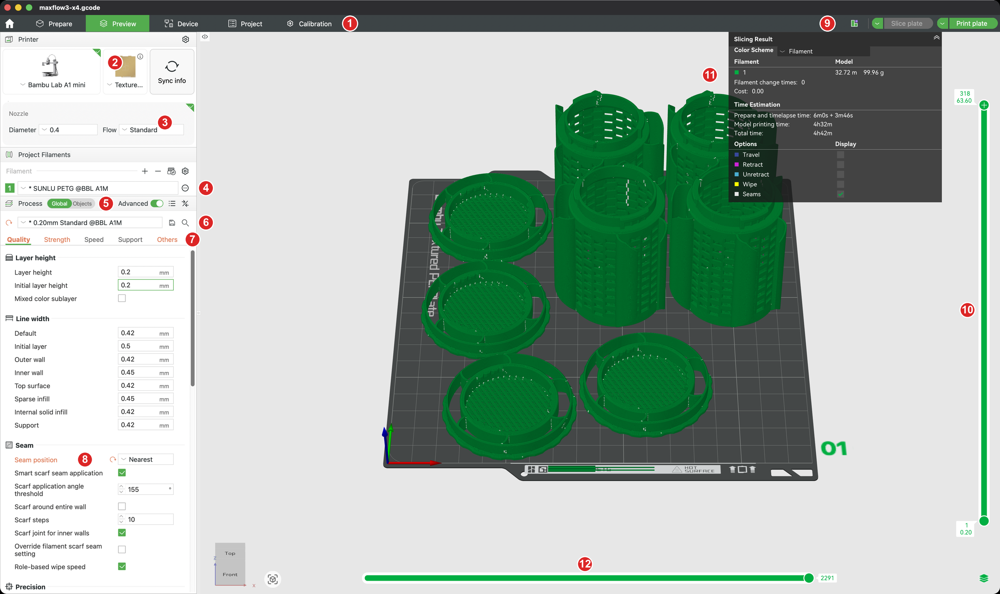
| 1 Вкладки верхнего уровня | Prepare — расставить модели и настроить; Preview — что получилось после нарезки; Device — принтер: камера, температуры, прогресс; Project — описание проекта; Calibration — калибровки (§ 15). |
| 2 Printer и тип стола | карточка Bambu Lab A1 mini и стол Textured PEI Plate. От типа стола зависит температура стола из пресета филамента. |
| 3 Nozzle | диаметр 0.4 и Flow Standard — должны совпадать с реальным соплом. |
| 4 Filament | пресет филамента; значок справа — меню Edit: открывает окно Filament settings (§ 12). |
| 5 Global / Objects и Advanced | Global — настройки на весь стол, Objects — список объектов и их собственные настройки. Переключатель Advanced держать включённым: без него скрыта половина полей. |
| 6 Пресет процесса | список пресетов; дискета — сохранить текущие правки как пресет; лупа — поиск параметра по имени (самый быстрый способ найти поле). |
| 7 Вкладки процесса | Quality · Strength · Speed · Support · Others — разобраны дальше по одной. |
| 8 Изменённое поле | оранжевое имя + круглая стрелка = значение отличается от пресета; стрелка возвращает его. |
| 9 Slice plate / Print plate | нарезать стол → отправить на принтер. Стрелка слева — варианты («все столы»). |
| 10 Вертикальный ползунок | слой (номер и высота): посмотреть модель на любом слое. |
| 11 Slicing Result | вес, время, Color Scheme — чем окрашено превью (§ 13). |
| 12 Горизонтальный ползунок | движение сопла внутри слоя: видно порядок печати и переезды. |
Слой, ширина линии, шов, точность контура, разглаживание, генератор стенок и порядок стенок.
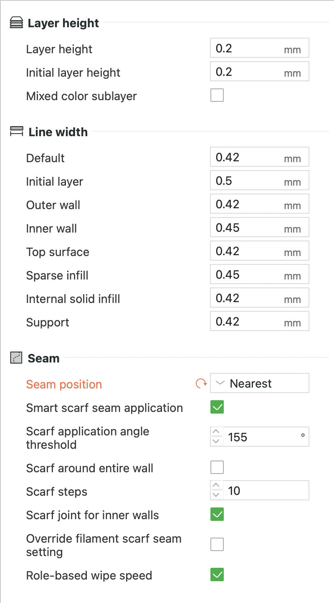
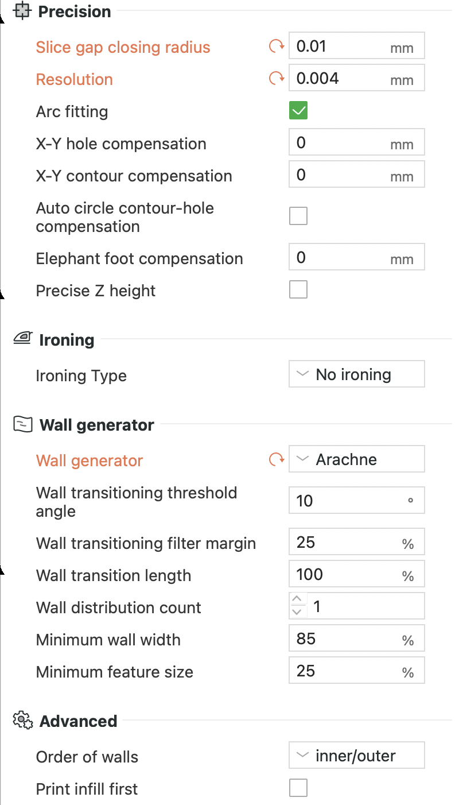
| Параметр | Что делает | Сток / наше | Когда трогать |
|---|---|---|---|
| Layer height layer_height | высота слоя — главный рычаг качества и времени (§ 3) | 0.2 (задаётся пресетом) | выбирай пресет, а не число; тонкий слой на части высоты — Height range (§ 14) |
| Initial layer height | высота первого слоя | 0.2 | не трогать: 0.2 прощает неровность стола |
| Mixed color sublayer | подслои для смешения цветов | выкл | только с AMS |
| Параметр | Что делает | Сток | Когда трогать |
|---|---|---|---|
| Default, Outer wall, Inner wall, Top surface, Sparse infill, Internal solid infill, Support | ширина дорожки для каждого типа линий | 0.42 / 0.42 / 0.45 / 0.42 / 0.45 / 0.42 / 0.42 | диапазон для сопла 0.4 — 0.2…0.6. Стенки 0.5 — быстрее (на ту же толщину меньше периметров) и убирает мелкий gap fill. Верх 0.35–0.40 — чище. Сужать ради качества — нет. |
| Initial layer | ширина первого слоя | 0.5 | шире — крепче держится, уже — легче снимается |
Каждый замкнутый контур где-то начинается и кончается — это и есть шов. Вопрос только в том, где он окажется.
| Параметр | Что делает | Сток / наше | Когда трогать |
|---|---|---|---|
| Seam position seam_position | Aligned — швы друг над другом, прячутся в угол; Nearest — ближайшая точка; Back — на задней стороне; Random — точки по всей поверхности | Aligned / Back или Aligned в угол | Back на органике и лицевых деталях (шов уходит на скрытую сторону). На цилиндре Aligned даёт вертикальную линию во всю высоту — угла, чтобы спрятать, нет. На резьбе Aligned прыгает от слоя к слою и сажает капли на витки. |
| Smart scarf seam application, Scarf application angle threshold, Scarf around entire wall, Scarf steps, Scarf joint for inner walls, Override filament scarf seam setting | наклонный шов (scarf): начало и конец контура размазываются по высоте, чтобы не было бугорка | — | В 02.08.02.61 не работает: проверено на кольце и Benchy — G-code идентичен до байта с выключенным scarf. Не рассчитывать, пока не проверим на новой версии. |
| Role-based wipe speed | скорость протирки по типу линии | вкл | не трогать |
| Параметр | Что делает | Сток / наше | Когда трогать |
|---|---|---|---|
| Resolution resolution | допуск, с которым путь сопла повторяет меш. Больше — отрезки длиннее и грубее | 0.012 / 0.004 | всегда 0.004 (цена: +37 с на 3-часовой печати). Ниже 0.003 нельзя: принтер не успевает за потоком команд и пропускает экструзию. |
| Slice gap closing radius slice_closing_radius | заращивает щели меша меньше 2× значения; маскирует Resolution | 0.049 / 0.01 | только парой с Resolution. Поднимать лишь для заведомо битого меша. |
| Arc fitting enable_arc_fitting | дуги G2/G3 вместо тысяч коротких отрезков | вкл | не выключать: без дуг утка — 1.77 млн команд вместо 0.74 млн и +11 минут |
| X-Y hole compensation | расширяет (+) или сужает (−) отверстия | 0 | отверстия и пазы тугие: +0.1…0.2. У нас пазы PLA выходили на 0.1–0.2 мм уже номинала |
| X-Y contour compensation | то же для наружного контура | 0 | наружный размер для посадки |
| Auto circle contour-hole compensation | автоматическая компенсация круглых отверстий | выкл | не проверяли |
| Elephant foot compensation | подрезает первые слои, чтобы не было «слоновьей ноги» — выступа у стола | 0 / 0.1–0.15 | видимая нижняя кромка (рамки, лицевые панели) |
| Precise Z height | подгоняет высоту последних слоёв под точную высоту модели | выкл | не проверяли |
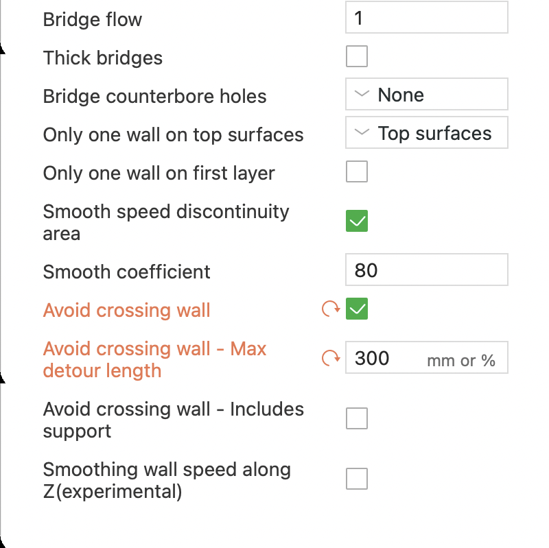
Сопло второй раз проходит по верхней поверхности с крошечным потоком и загибает её в гладкую глянцевую плоскость.
| Ironing Type | No ironing / Top surfaces / Topmost surface / All solid layer. Сток — выкл. Топ плоских крышек, табличек. |
| Ironing flow, Ironing speed | 10 % и 30 мм/с. Поток настолько мал, что сопло «пустеет», и первая линия следующего слоя выходит рваной. Лечится небольшим подъёмом обоих. |
Гладкий верх у нас в очереди тем — не проверялся печатью.
| Параметр | Что делает | Сток / наше | Когда трогать |
|---|---|---|---|
| Wall generator wall_generator | Classic — линии одной ширины; Arachne — переменная ширина, заполняет узкие места одной линией вместо мусора gap fill | Classic | Arachne — только одной переменной и по делу: плотная резьба/рельеф, где classic даёт тысячи крошечных gap fill. На Benchy Arachne испортил буквы, планки крыши и перемычки (широкие линии на потоке, калиброванном под 0.42). |
| Wall transitioning threshold angle, …filter margin, Wall transition length, Wall distribution count, Minimum wall width, Minimum feature size | тонкая настройка Arachne | 10° / 25 % / 100 % / 1 / 85 % / 25 % | видны только при Arachne; не трогать. Против микро-завитушек — Minimum feature size побольше. |
| Параметр | Что делает | Сток / наше | Когда трогать |
|---|---|---|---|
| Order of walls wall_sequence | inner/outer — сначала внутренние, наружная прилипает к соседу: лучше нависания. outer/inner — точнее размер и чище наружная, хуже нависания. inner/outer/inner — наружная посередине | inner/outer | outer/inner — точные детали без крутых нависаний. inner/outer/inner — против «линии пола» (§ 20), только на стенках без окон: на коробке с окном перемычка над окном провисла сильнее. |
| Print infill first | заполнение раньше стенок | выкл | не трогать |
| Bridge flow | поток на мостах | 1 | совет «1.5 для мостов» у нас не проверен; мост 29 мм печатался чисто и на 0.95. Только после теста. |
| Thick bridges | мосты толстыми круглыми линиями | выкл | — |
| Bridge counterbore holes | мостики над ступенчатыми отверстиями под винт, если печатать их вниз | None | отверстие под головку винта смотрит на стол |
| Only one wall on top surfaces | на верхних поверхностях одна стенка — больше места под гладкий верх | Top surfaces | — |
| Only one wall on first layer | первый слой с одной стенкой | выкл | — |
| Smooth speed discontinuity area, Smooth coefficient | сглаживает резкие скачки скорости | вкл / 80 | не трогать |
| Avoid crossing wall reduce_crossing_wall | переезды обходят стенки, а не волокут каплю через наружную стенку | выкл / вкл | всегда. Нитки и грязь на внутренних стенках уходят. |
| Avoid crossing wall - Max detour length | насколько далеко можно обходить | 0 / 300 | вместе с предыдущим |
| Avoid crossing wall - Includes support | обходить и поддержки | выкл | — |
| Smoothing wall speed along Z (experimental) | сглаживает скорость стенки между слоями | выкл | не проверяли |
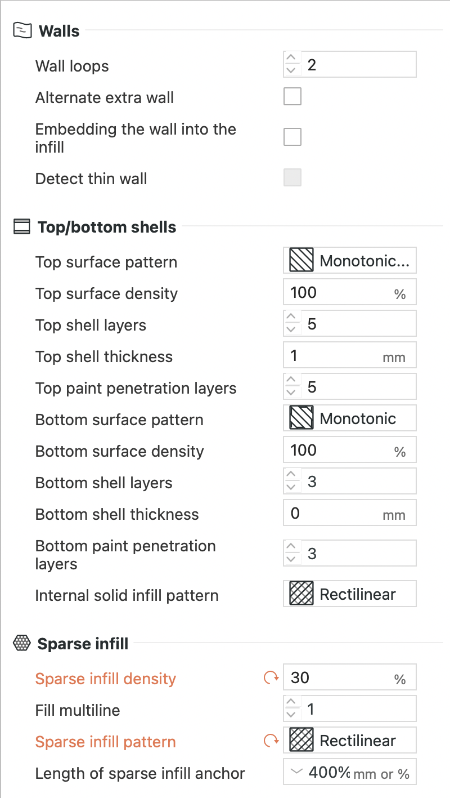
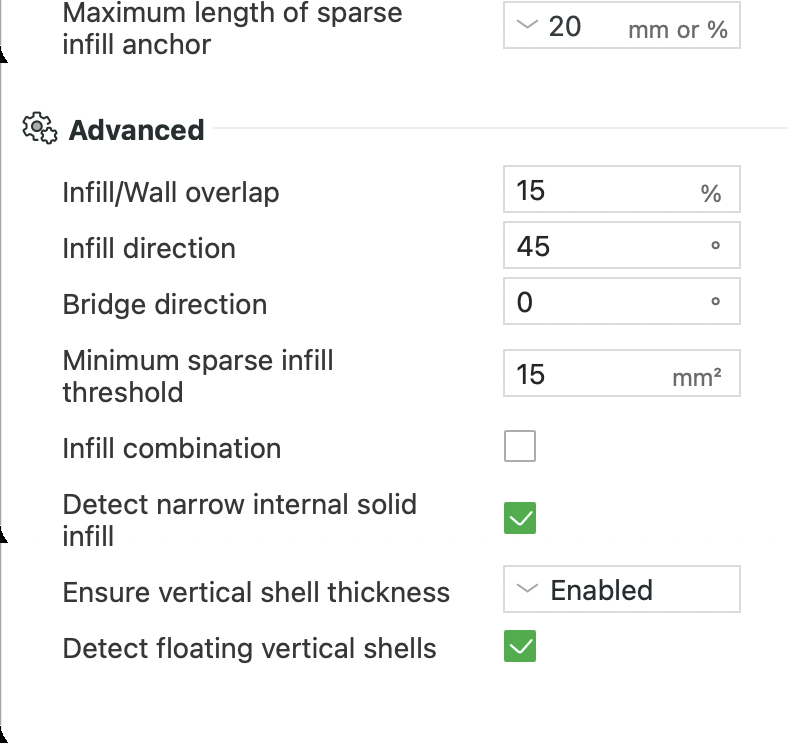
| Параметр | Что делает | Сток / наше | Когда трогать |
|---|---|---|---|
| Wall loops wall_loops | число периметров — главный источник прочности | 2 / 3 по делу | 3 — коробки, полки, планшеты: убирает валик на высоте внутренних полов (Benchy: палуба). Цена: +5–10 % времени, +7–10 % пластика, и гладкий борт ниже палубы выглядит хуже, чем с двумя. На гладких корпусах — выбор. Прочное — 3–4. |
| Alternate extra wall | лишняя стенка через слой (перевязка) | выкл | не проверяли |
| Embedding the wall into the infill | утопить стенку в заполнение | выкл | не проверяли |
| Detect thin wall | тонкие места печатаются одной линией (classic) | выкл | тонкие рёбра пропадают в превью |
| Параметр | Что делает | Сток / наше | Когда трогать |
|---|---|---|---|
| Top surface pattern top_surface_pattern | рисунок видимой верхней поверхности | Monotonic line / по форме | Concentric на круглых верхах, Monotonic на остальных. Десять секунд на выбор, разница большая. |
| Top surface density | плотность верхнего слоя | 100 % | — |
| Top shell layers и Top shell thickness | сплошных слоёв сверху. Берётся большее из «слоёв × высота слоя» и толщины | 5 / 1 мм | при тонком слое (0.12) 5 слоёв = 0.6 мм, но толщина 1 мм добавит слоёв сама |
| Bottom surface pattern, Bottom shell layers, Bottom shell thickness | то же для дна | Monotonic / 3 / 0 | дно, которое должно быть жёстким (Gridfinity) — 5 |
| Top/Bottom paint penetration layers | на сколько слоёв вглубь идёт раскраска | 5 / 3 | AMS |
| Internal solid infill pattern | рисунок внутренних сплошных слоёв | Rectilinear | Concentric — длинные непрерывные линии (обязательно для TPU) |
| Параметр | Что делает | Сток / наше | Когда трогать |
|---|---|---|---|
| Sparse infill density | плотность заполнения внутри | 15 % | прототип 10 %; штифты 100 %. Прочность — стенками (§ 4). |
| Sparse infill pattern | узор: Grid, Gyroid, Cubic, Rectilinear, Lightning… | Grid | Gyroid — прочно во все стороны. Lightning экономит, но шатается: под «висящим» полом ~1 из 30 проваливается — лучше модификатор-столбик. |
| Fill multiline, Length of sparse infill anchor, Maximum length of sparse infill anchor | многолинейное заполнение, «якоря» заполнения к стенке | 1 / 400 % / 20 | не трогать |
| Параметр | Что делает | Сток | Когда трогать |
|---|---|---|---|
| Infill/Wall overlap infill_wall_overlap | насколько заполнение заходит на стенку | 15 % | из-за него сплошной слой выдавливает тонкие стенки наружу (линия пола). 0 или минус развязывает, но деталь заметно слабее. |
| Infill direction, Bridge direction | угол заполнения; угол мостов (0 = авто) | 45° / 0 | — |
| Minimum sparse infill threshold | области меньше этой площади заливаются сплошь | 15 мм² | — |
| Infill combination | печатать заполнение толщиной в несколько слоёв сразу — быстрее | выкл | экономия времени без видимой цены (автор Moai) |
| Detect narrow internal solid infill | узкие внутренние сплошные участки — концентрично | вкл | выкл вместе со следующим — если сам управляешь «где сплошное» модификаторами |
| Ensure vertical shell thickness | добавляет сплошное заполнение, где стенка по вертикали тонкая | Enabled | выключение развязывает стенки от полов (линия пола) и убирает лишнее сплошное |
| Detect floating vertical shells | ищет вертикальные оболочки, висящие в воздухе | вкл | — |
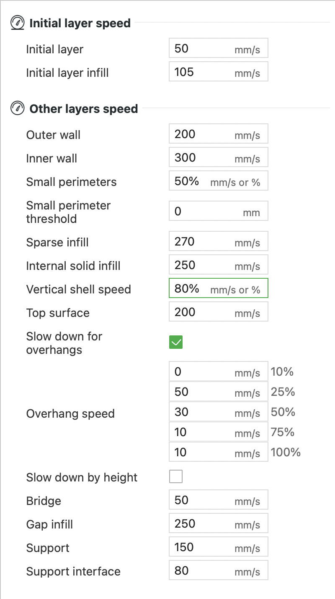
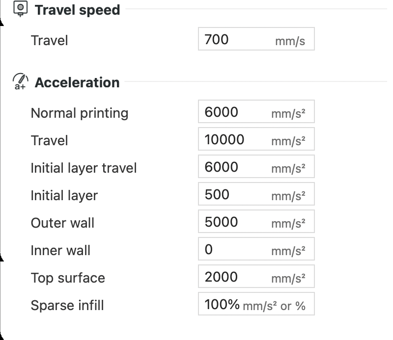
| Параметр | Что делает | Сток | Когда трогать |
|---|---|---|---|
| Initial layer / Initial layer infill | скорость первого слоя: стенки / заполнение | 50 / 105 | 30 — «надёжность важнее скорости», если первый слой рвётся |
| Outer wall outer_wall_speed | наружная стенка — то, что видно | 200 | 60 против ряби и VFA на ровных вертикальных плоскостях (это и есть 0.16mm High Quality). Эхо после углов (ringing) — −10–15 %. На органике при 0.12 замедлять не нужно: башня 40–200 мм/с волны не дала. |
| Inner wall | внутренние стенки | 300 | — |
| Small perimeters, Small perimeter threshold | скорость маленьких контуров (в % от стенки) и порог «маленький» | 50 % / 0 | — |
| Sparse infill, Internal solid infill, Top surface | заполнение / сплошное / верх | 270 / 250 / 200 | верх медленнее — чуть чище |
| Vertical shell speed | скорость сплошного у вертикальных стенок | 80 % | — |
| Slow down for overhangs enable_overhang_speed | замедляет линии, которые висят в воздухе. Таблица Overhang speed: доля висящей линии → скорость (10 % → 0 = без замедления, 25 % → 50, 50 % → 30, 75 % → 10, 100 % → 10) | вкл | выключение даёт ровный блеск (всё одной скоростью), но скругление, которое касается стола, держится именно на этом замедлении — там не выключать |
| Slow down by height | замедление с высотой (против раскачки высоких деталей) | выкл | высокая узкая деталь на столе, который ездит по Y |
| Bridge, Gap infill, Support, Support interface | мосты / мелкое заполнение щелей / поддержки / крыша поддержек | 50 / 250 / 150 / 80 | — |
| Travel | скорость переездов | 700 | — |
| Acceleration: Normal printing, Travel, Initial layer travel, Initial layer, Outer wall, Inner wall, Top surface, Sparse infill | ускорения, мм/с² | 6000 / 10000 / 6000 / 500 / 5000 / 0 (= общее) / 2000 / 100 % | не трогали; на мелких деталях они, а не скорость, решают реальный темп |
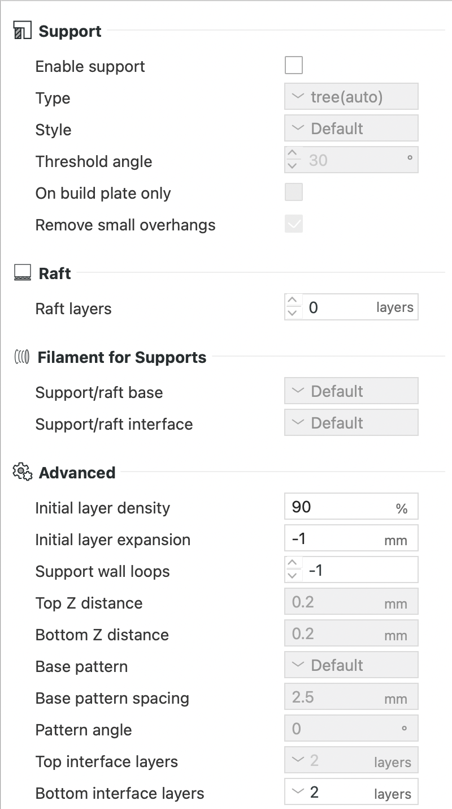
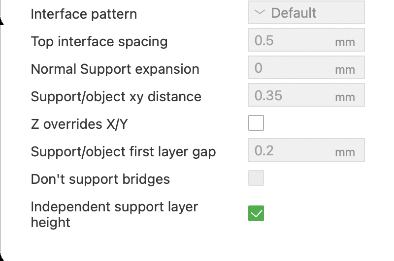
| Параметр | Что делает | Сток / наше | Когда трогать |
|---|---|---|---|
| Enable support | включить генерацию поддержек | выкл | нависания круче ~45°, мосты длиннее 25 мм, детали, начинающиеся в воздухе |
| Type | normal(auto) — прямые колонны; tree(auto) — деревья; …(manual) — только там, где нарисован Support enforcer | tree(auto) | органика и фигурки — tree(auto). Плоские консоли защёлок — normal(auto). tree(manual) без нарисованных enforcer'ов не даст ничего. |
| Style | форма деревьев: Default, Tree Slim, Tree Strong, Tree Hybrid, Tree Organic | Default | — |
| Threshold angle | угол от горизонтали: поверхности положе порога получают поддержку. Больше число — больше поддержек | 30° | на корпусе с губами 45° дал ту же крышу поддержек на тех же слоях и +1.4 % времени — остались на 30 |
| On build plate only | поддержки растут только от стола, не от модели | выкл | вкл, если нельзя, чтобы поддержка стояла на видимой поверхности. Выкл, если губы изнутри держатся на самой модели. |
| Remove small overhangs | не строить поддержку под мелочью | вкл | — |
| Raft layers | подложка под всей деталью | 0 | не нужна на PEI |
| Support/raft base, Support/raft interface | каким филаментом печатать поддержки | Default | только AMS |
| Initial layer density, Initial layer expansion, Support wall loops | первый слой поддержки, стенки у поддержки | 90 % / −1 / −1 | — |
| Top Z distance support_top_z_distance | зазор между крышей поддержки и моделью — решает, отдерётся ли | 0.2 / 0.2–0.3 | PETG — 0.25 (на 0.2 приваривается). У пресета 0.12 Fine зазор = один слой 0.12 — приваривается, ставь 0.24–0.3. Если поддержка несущая (задумана автором) — оставь авторское. |
| Bottom Z distance | зазор снизу, где поддержка стоит на модели | 0.2 | — |
| Base pattern, Base pattern spacing, Pattern angle | тело поддержки | Default / 2.5 / 0 | — |
| Top interface layers, Bottom interface layers, Interface pattern | «крыша» поддержки: плотные слои, на которых лежит модель | 2 / 2 / Default | — |
| Top interface spacing | шаг линий крыши | 0.5 | 0.2 (плотно), если низ консоли будет скользить по поверхности (защёлки) |
| Support/object xy distance | зазор сбоку между поддержкой и моделью | 0.35 | 0.6–0.8, когда стволы деревьев обнимают деталь (утку снимали полчаса) |
| Z overrides X/Y, Support/object first layer gap, Don't support bridges | приоритет зазоров; зазор на первом слое; не ставить под мосты | выкл / 0.2 / — | «Don't support bridges» не помог на решётке: планку над краями ламелей Studio считает нависанием, а не мостом |
| Independent support layer height | поддержка со своей высотой слоя | вкл | включается само вместе с Height range: +3–5 % времени, модели не вредит |
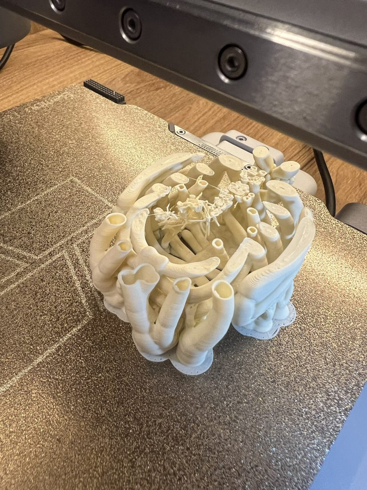
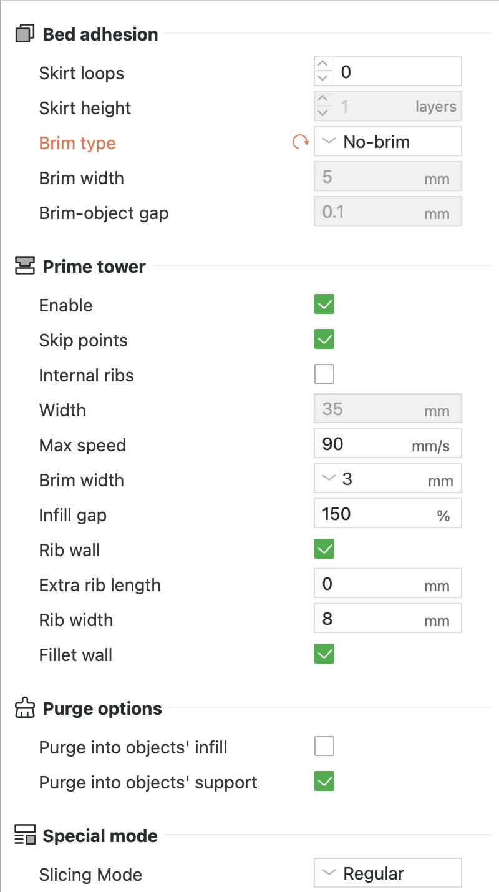
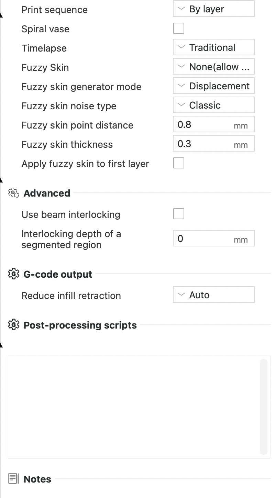
| Параметр | Что делает | Сток / наше | Когда трогать |
|---|---|---|---|
| Skirt loops, Skirt height | юбка — контур вокруг детали, не касается её | 0 / 1 | тонкие столбики тестов (5 мм юбка держит их от падения) |
| Brim type brim_type | Auto Brim, No-brim, Outer brim only, Inner brim only, Outer and inner brim, Brim Ears (ушки на острых углах), Painted | Auto | Outer brim only, 5 мм — сразу, а не «если оторвётся», когда: пятно первого слоя меньше ⅓ основания при высоте > 40 мм; высота / ширина > 3.5; полое дно; центр масс выходит за пятно. No-brim — плоское дно ≥ 60 см². Острые углы, которые могут отогнуться, — Brim Ears. |
| Brim width, Brim-object gap | ширина каймы; зазор до детали (чтобы легко отломить) | 5 / 0.1 | — |
Башня очистки нужна при смене филамента (AMS) или для Smooth-таймлапса. С одним филаментом и Traditional-таймлапсом не нужна. Purge into objects' infill/support — сброс при смене цвета в заполнение: только AMS.
| Параметр | Что делает | Сток | Когда трогать |
|---|---|---|---|
| Slicing Mode | Regular / Even-odd / Close holes — как трактовать пересекающиеся оболочки меша | Regular | битые модели |
| Print sequence print_sequence | By layer — все объекты слой за слоем; By object — сначала один целиком, потом следующий | By layer | By object — ноль переездов между деталями и лучшее качество, но только если каждая деталь ниже 25 мм (клиренс A1 mini до штанги, extruder_clearance_height_to_rod) |
| Spiral vase | одна стенка спиралью, без швов и верха | выкл | вазы и тест MVS; для вещи на показ выглядит дёшево |
| Timelapse | Traditional — кадр в конце каждого слоя; Smooth — голова уезжает к башне и чистит сопло | Traditional | Smooth заодно лечит «пустое сопло» после мелких экструзий: каждый слой начинается с полного сопла |
| Fuzzy Skin, …generator mode, …noise type, …point distance, …thickness, Apply fuzzy skin to first layer | шероховатая «каменная» наружная стенка | None, 0.8 / 0.3 | скрывает слои, ступеньки и швы. Moai: Outer, 0.4 / 0.22 — все «заметные» дефекты прогноза пропали под текстурой |
| Use beam interlocking | сцепление разных материалов | выкл | AMS |
| Reduce infill retraction | не делать откат внутри заполнения | Auto | — |
| Post-processing scripts, Notes | скрипты после нарезки; заметки к пресету | — | — |
Открывается значком справа от пресета филамента (цифра 4 на обзоре) → Edit. Здесь всё, что относится к катушке. Результаты калибровки живут тут.
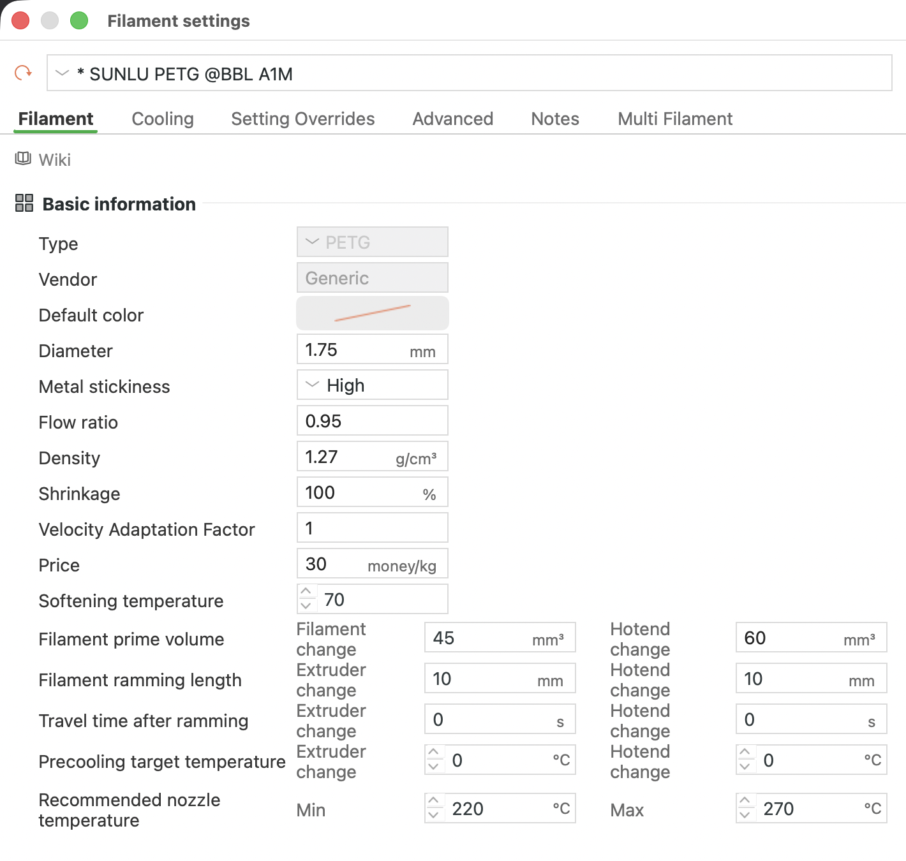
| Параметр | Что делает / наше |
|---|---|
| Flow ratio filament_flow_ratio | сколько пластика идёт в линию нужной ширины. Калибруется (§ 15). Наши: PLA 0.98, Matte 0.975, PETG 0.95. Нормальный диапазон 0.92–1.00; вне его ищи другую причину (влага, засор, диаметр). |
| Type, Vendor, Diameter, Density, Price | 1.75 мм; плотность и цена — для веса и стоимости в превью |
| Shrinkage filament_shrink | усадка по XY, 100 % = нет. Для деталей, которые должны совпасть размером с чем-то (Gridfinity, крышка): мерить длинный брусок, Shrinkage = измерено ÷ чертёж × 100 %. Не для тугого отверстия — это другое. |
| Metal stickiness, Velocity Adaptation Factor, Softening temperature, Filament prime volume, ramming, precooling | служебное и для AMS — не трогать |
| Recommended nozzle temperature | допустимый диапазон; только предупреждение, на печать не влияет |
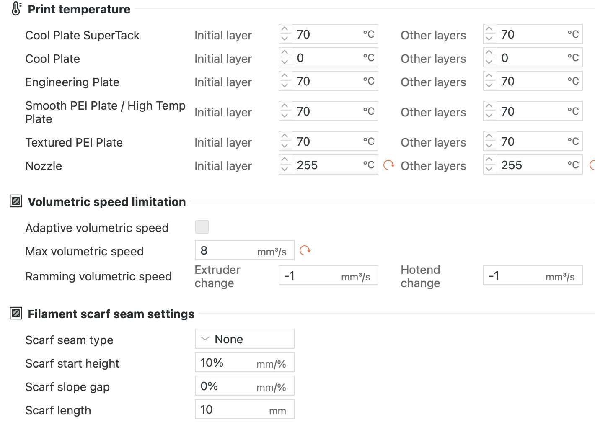
| Параметр | Что делает / наше |
|---|---|
| Print temperature: строка Textured PEI Plate | температура стола для нашей пластины: первый слой / остальные. PLA 65, PETG 70 (к 80 — только если PETG реально отрывается). Остальные строки — для других пластин. |
| Nozzle — Initial layer / Other layers nozzle_temperature | температура сопла. Калибруется башней, обе строки одинаково. Наши: PLA 220, Matte 225, PETG 245. |
| Adaptive volumetric speed | не трогать |
| Max volumetric speed filament_max_volumetric_speed | главный ограничитель скорости (§ 2). Калибруется. Наши: PLA 12, Matte 24, PETG 16. |
| Ramming volumetric speed | AMS — не трогать |
| Filament scarf seam settings | scarf на уровне филамента — в 02.08.02.61 не работает (§ 7) |
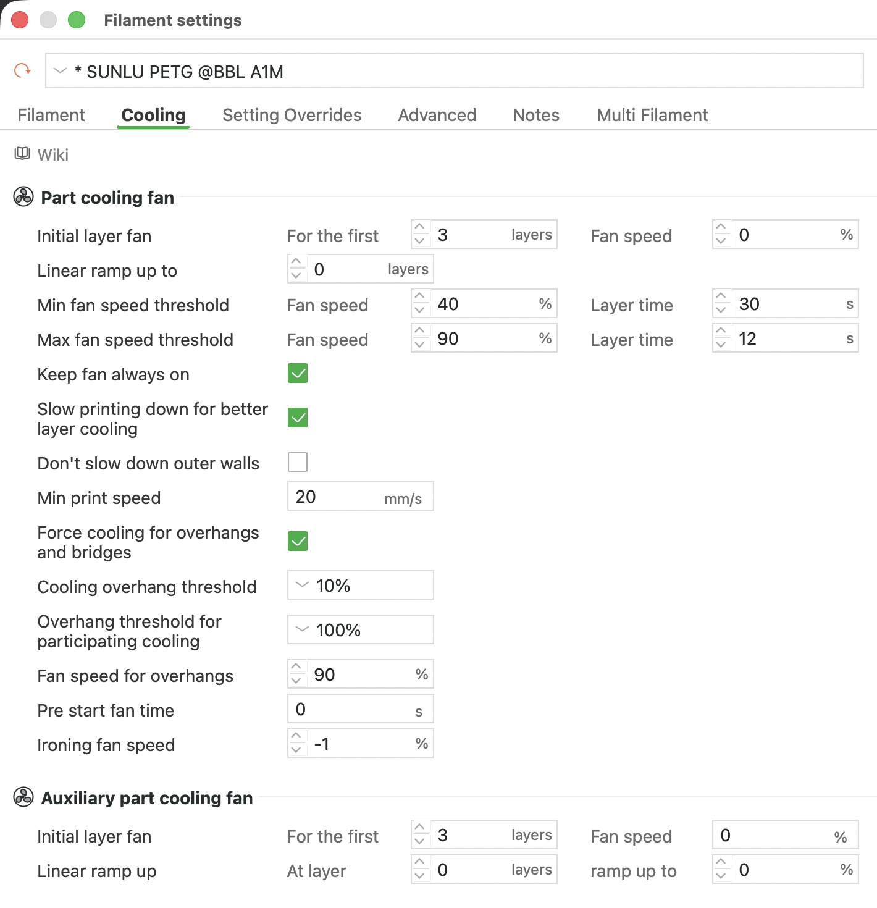
Как это работает. Вентилятор задаётся не для типа линии, а для слоя, по его времени:
Поэтому скачок времени слоя (кончилась деталь-соседка, начались губы корпуса) меняет и обдув, и скорость, и на стенке появляется полоса блеска.
| Параметр | Что делает | PETG / PLA | Когда трогать |
|---|---|---|---|
| Initial layer fan, Linear ramp up to | вентилятор выкл первые N слоёв; плавный разгон | 3 слоя, 0 % | — |
| Min fan speed threshold / Max fan speed threshold | две точки кривой «время слоя → обдув» | 40 % @ 30 с / 90 % @ 12 с; PLA 60–80 %, 6 с | полоса блеска на корпусе: обдув min = max — вентилятор постоянный, время и вес те же (корпус PETG: 35 разных значений обдува → 5) |
| Keep fan always on | не выключать вентилятор совсем | вкл | — |
| Slow printing down for better layer cooling | замедлять короткие слои | вкл | выключение даёт ровный блеск, но на тонких верхушках — перегрев |
| Don't slow down outer walls no_slow_down_for_cooling_on_outwalls | замедление берётся из внутренних стенок и заполнения, а не из видимой наружной | выкл / вкл | всегда: наружная стенка ровнее, время то же (замер: разброс скорости стенки 31 → 20 мм/с) |
| Min print speed | ниже этой скорости не замедлять | 20 | — |
| Force cooling for overhangs and bridges, Cooling overhang threshold, Overhang threshold for participating cooling, Fan speed for overhangs | свой обдув для нависаний и мостов — единственный обдув «по типу линии» | вкл, 10 %, 100 %, 90 % | не выключать: на нём держатся нависания и скругление у стола |
| Pre start fan time, Ironing fan speed, Auxiliary part cooling fan | служебное; у A1 mini вспомогательного вентилятора нет | — | — |
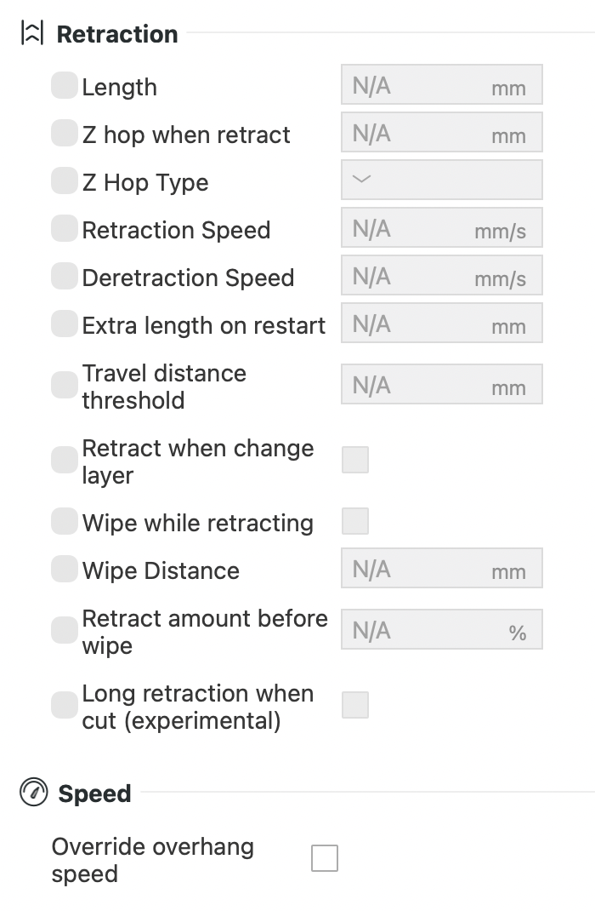
Ретракт (откат филамента перед переездом) живёт в пресете принтера. Здесь его можно переопределить для одного пластика: поставить галочку у поля — и поле станет активным.
Length — длина отката. У A1 mini в пресете принтера 0.8 мм / 30 мм/с, Z hop when retract 0.4 (Auto Lift), Wipe while retracting вкл.
Вкладка Advanced — стартовый/конечный G-code филамента: не трогать. Пресет принтера (Machine G-code) — тоже; шестерёнка справа от заголовка Printer открывает не его настройки, а выбор принтеров.
Превью — главный инструмент понимания: оно показывает, что на самом деле будет печатать принтер. Color Scheme в панели Slicing Result переключает окраску: Summary, Line Type, Filament, Speed, Layer Height, Line Width, Flow, Layer Time, Fan Speed, Temperature…
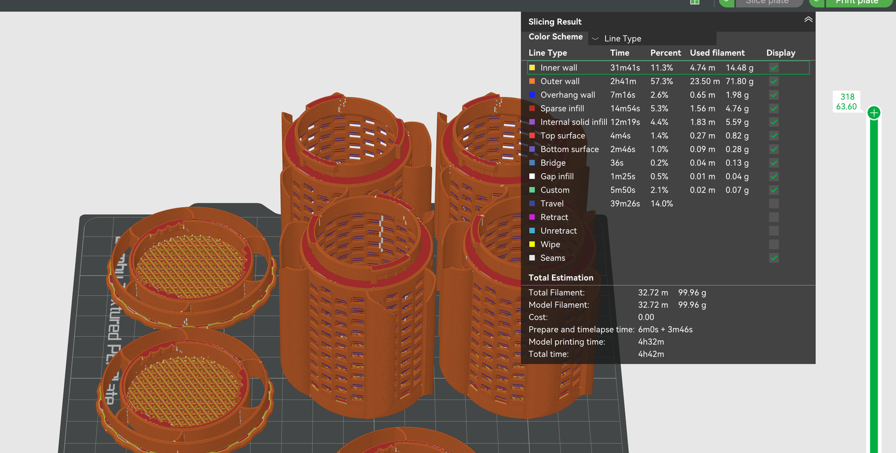
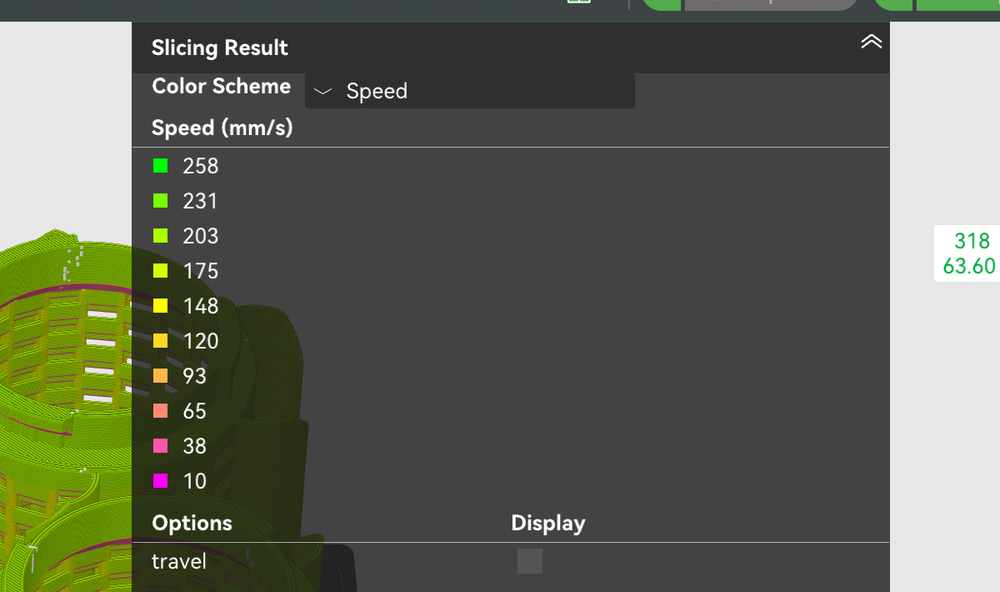
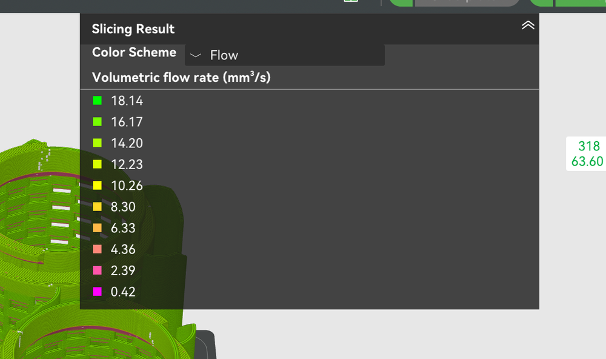
| Что | Где и что значит |
|---|---|
| Gap infill (белые точки, обрывки) | Line Type: россыпь мелких белых экструзий на одних и тех же слоях → там будет грязно или слабо (§ 20, «мелкие экструзии») |
| Bridge и Overhang wall | Line Type: длинный мост без поддержки > 25 мм — провиснет; > 40 мм — не печатать так |
| Деталь, начинающаяся в воздухе | листать вертикальный ползунок: островок без ничего под ним, особенно после блокировщика поддержек |
| Support interface под видимой поверхностью | там будет шершавый след от поддержки — развернуть деталь или принять |
| Seams | вертикальная линия швов на цилиндре — спрятать шов (Back / угол) |
| Travel через полость | переезды поперёк окна или канала — будущие нитки внутри |
| Layer Time | много слоёв короче порога подряд — тонкая верхушка перегреется, заглянцует |
| Fan Speed | ступенька обдува на стенке = полоса блеска |
| Первый слой | ползунок на слой 1: пятно контакта маленькое, а деталь высокая → кайма |
| Предупреждения | Studio пишет внизу справа («floating regions» и т. п.) — читать каждое |
Переключатель Global / Objects (цифра 5) показывает список объектов стола. У каждого объекта могут быть свои настройки поверх процесса. Правый клик по объекту:
| Add part | добавить тело к объекту |
| Add negative part | вычесть тело (дырка без CAD) |
| Add modifier | невидимое тело (куб, цилиндр, сфера): внутри него свои настройки — например, заполнение 30 % столбиком под «висящим» полом или 3 сплошных слоя в тонкой полосе. При пересечении модификаторов действует последний в списке. |
| Add height range (Height range Modifier) | свои настройки на полосе высот: тонкий слой только там, где пологие скаты. Moai: 0.08 на короне 82–106 мм — ступеньки 0.4–0.8 мм, 6:31 вместо 7:56 при сплошном 0.12. |
| Add support blocker / Add support enforcer | коробка «здесь без поддержек» / «здесь обязательно» (§ 10) |
| Lay on face, Auto orient, Arrange, Cut, Simplify | положить гранью на стол; автоориентация; раскладка; разрезать; упростить меш (Studio предлагает на 1.9 млн граней — для нарезки не нужно) |
Раскладка на A1 mini (стол 180 × 180 мм): левые 20 мм стола не использовать (там головка чистит сопло), одиночную деталь ставить правее центра. Принтер без очереди: несколько столов — отдельными файлами, по одному.
Системный пресет — догадка для марки и класса пластика, а не для катушки на принтере. Когда догадка неточна: бороздки или волна на верхних поверхностях (поток), волоски и подтянутые кончики нависаний (перегрев), рыхлая стенка на скорости (MVS завышен), медленная печать (MVS занижен).
| Шаг | Что меряем | Поле в пресете | Стол |
|---|---|---|---|
| 1. Flow, грубо | поток, 9 блоков −20…+20 % | Flow ratio | только для первой линейки марки |
| 2. Башня температур | температура сопла | Nozzle (обе строки) | ~65–85 мин |
| 3. Flow, точно | поток, 10 блоков −9…0 %, на выбранной температуре | Flow ratio | ~33 мин |
| 4. Max volumetric speed | предел расхода, цилиндр-ваза с нарастающим потоком | Max volumetric speed | ~14 мин |
| 5. Пресет | сохранить три числа | — | — |
| по симптому: ретракт | кольца с растущим откатом | Retraction length | только при нитках |
| по задаче: усадка | длинный брусок | Shrinkage | для деталей «в размер» |
Pressure advance не калибруем. A1 mini меряет его сам перед каждой печатью — галочка Flow Dynamics Calibration в окне отправки. В пресете enable_pressure_advance = 0, и так и оставляем.
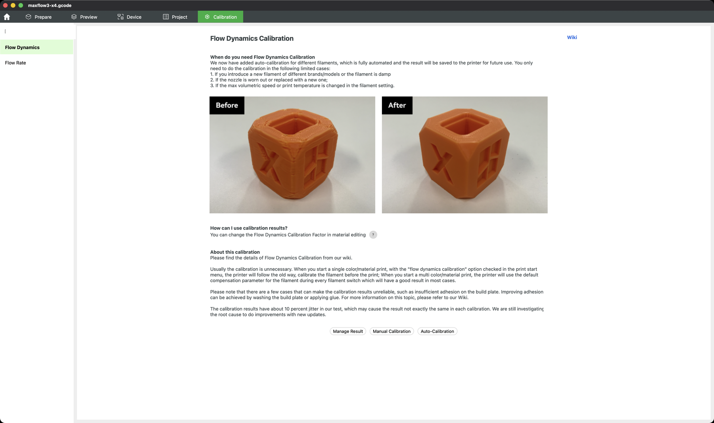
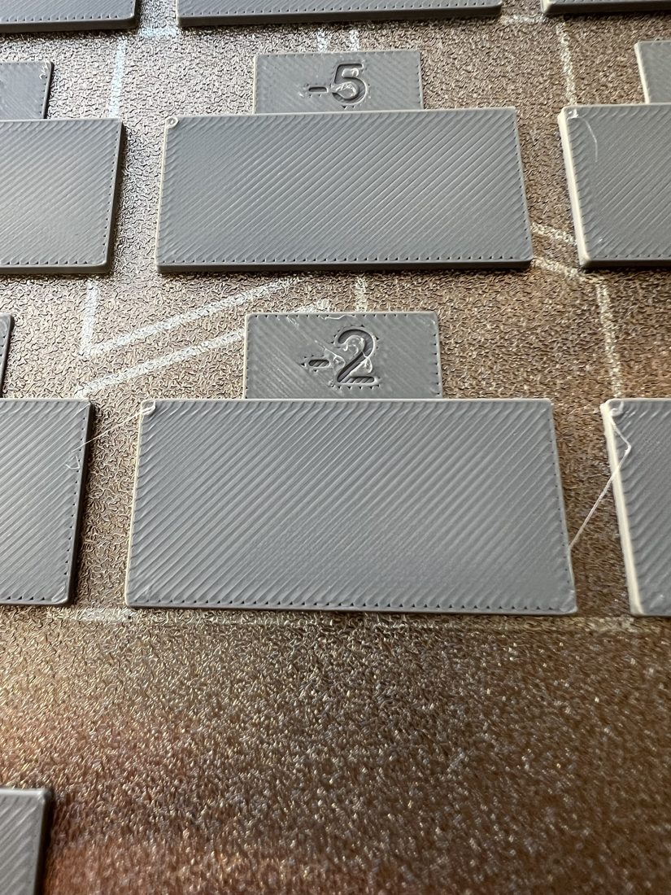
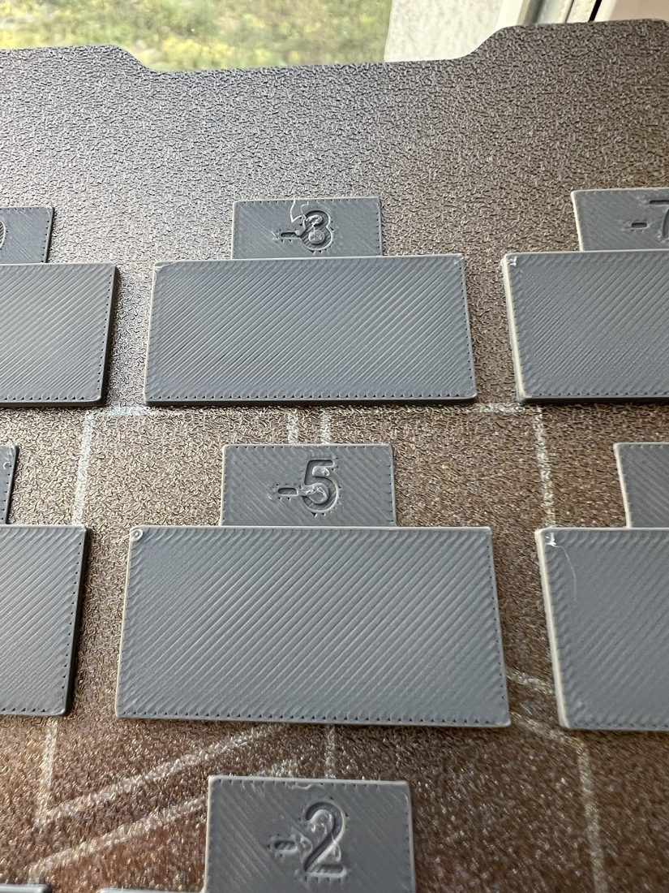
Что искать: блок с гладким верхом без щелей между линиями. Мало потока — тёмные бороздки; много — выпуклые линии и глянцевая волна. Можно взять значение между двумя блоками.
Число на блоке — не поток, а поправка в процентах: поток блока = база × (1 + k/100). Пример: база 1.02, лучшие −5 и −4 → 0.969 и 0.979 → 0.975.
Лучший блок у края диапазона — сдвинь базу на 0.05 и повтори.
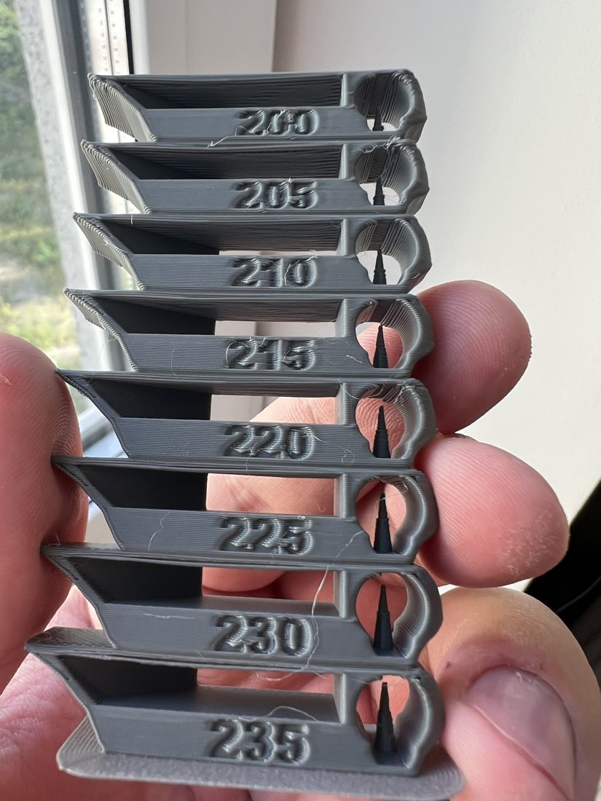
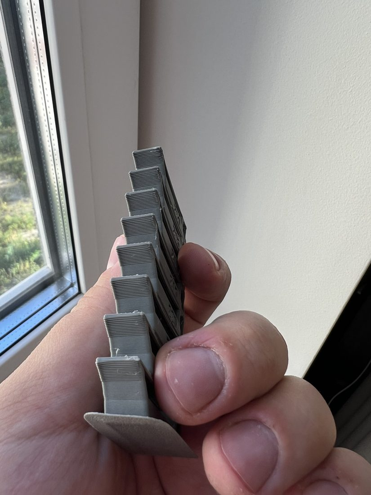
Диапазон — с этикетки, полоса «для быстрых принтеров» (215–245 при 100–230 мм/с), а не для медленных.
Что искать по блокам: чистота и блеск стенки, ступенчатый козырёк (нависание), мост, нитки между колоннами, читаемость цифр. Холодные блоки рвутся на нависаниях: сопло не успевает проплавить поток на скоростях пресета. Горячие — подтянутые кончики, волоски, волна.
Волоски на всех блоках одинаково — это не температура, а переезды/ретракт.
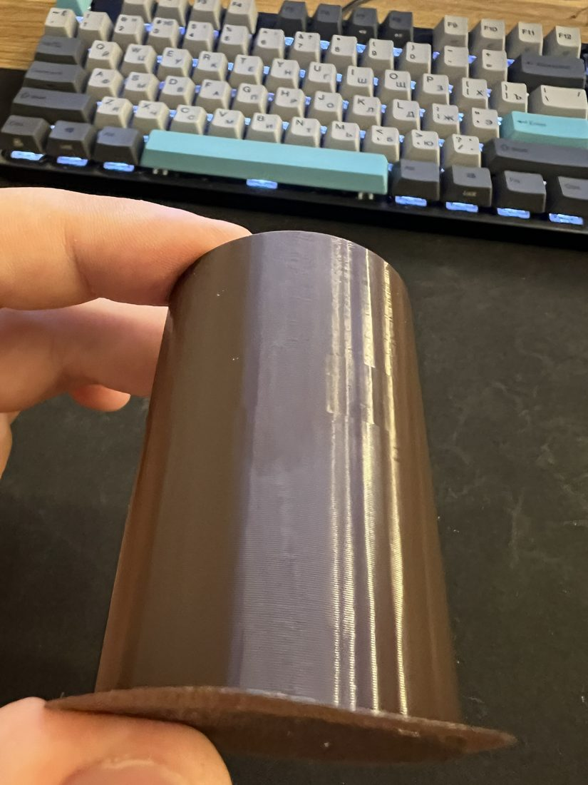
Цилиндр ⌀40 × 60 в режиме Spiral vase, поток растёт линейно от низа к верху. Что искать: высоту первого дефекта — стенка рвётся, матовеет, рыхлеет или меняет блеск.
Пример, рампа 4 → 30: 10 мм ≈ 8.2; 20 мм ≈ 12.6; 30 мм ≈ 16.9; 40 мм ≈ 21.3 мм³/с.
Ретракт — только при нитках, после сушки и температуры. Берётся первое кольцо без волосков и капель; держать низким, 0 нельзя. Нужен больше ~1.5 мм — значит, ретракт прячет другую проблему. Усадка — после потока: брусок 150–200 мм, замер по верху, Shrinkage = измерено ÷ чертёж × 100 %. У PLA обычно 0.1–0.3 %, у PETG 0.2–0.5 %; на плитке 170 мм 0.4 % — это уже 0.7 мм.
| Пресет | Родитель | Температура | Flow ratio | MVS | Дата |
|---|---|---|---|---|---|
| SUNLU PLA @BBL A1M (Bone White, Beige) | SUNLU PLA+ @BBL A1M | 220 °C | 0.98 | 12 (предел 13) | 16.09 |
| SUNLU Matte @BBL A1M (Grey, Oak) | SUNLU PLA Matte @BBL A1M | 225 °C | 0.975 | 24 (чисто до 26) | 19.09 |
| SUNLU PETG @BBL A1M (Olive Green) | Generic PETG @BBL A1M | 245 °C | 0.95 | 16 (чисто до 20) | 22.09 |
Матовый PLA — действительно другая линейка: у обычного SUNLU PLA предел 13 мм³/с, матовый чисто держит 26 — вдвое быстрее. Сушка: PLA 45–55 °C 4–6 ч, PETG 65 °C 6 ч. Признаки влаги: треск и шипение у сопла, пузыри в линии.
| Хочу | Первый выбор |
|---|---|
| Быстро: прототип, проверка посадок | 0.20mm Standard, 2 стенки, заполнение 10 %; поддержки, кайму и шов — как для чистовой. Шесть столов корпуса: 36.5 ч → 23.5 ч. Draft не стоит того. |
| Красиво | органика — 0.12mm Fine (или 0.20 + Height range 0.08 на пологой полосе); ровные вертикальные стенки — 0.16mm High Quality; 3 стенки; шов в угол или назад |
| Прочно | больше стенок (3–4), Gyroid плотнее; слой 0.20–0.24; температура — верх калиброванной |
Порядок столов в проекте из нескольких: сначала самый дешёвый (проверит пресет и адгезию), потом с самыми тонкими деталями, потом по возрастанию времени.
| Модель | Процесс и стенки | Ориентация и поддержки | Кайма, шов |
|---|---|---|---|
| Корпус с ровными стенками (где видна рябь и блеск) | 0.16mm High Quality, 3 стенки | самой большой плоской гранью вниз; губы изнутри держат деревья от самой модели (On build plate only выкл) | без каймы при плоском дне ≥ 60 см²; шов Back |
| Органика: рёбра, спины, купола | 0.12mm Fine или 0.20 + Height range 0.08 на пологом | как у автора; tree(auto), Top Z 0.24–0.3, XY 0.8 | Auto; шов Back |
| Коробка с полками, окнами | 0.20mm Standard, 3 стенки, inner/outer | открытой стороной вверх, без поддержек | Auto; шов Aligned в угол; фаски на кромках пола и окон в CAD |
| Полое дно, высокая и узкая, центр масс за пятном | по делу | как у автора | Outer brim only 5 мм сразу |
| Скругление, касающееся стола | ширина стенки 0.5 помогает | развернуть, если можно; иначе Height range с тонким слоем на нижние 0.28 × R (при 0.20) | альтернатива — фаска 45° в CAD |
| Свисток, канал, полость | слой автора | как у автора, отверстия к столу | Outer brim only; температура — низ калиброванного диапазона, ретракт 1.2 |
| Решётка с ламелями | 0.12mm Fine + 0.08 на скруглённом верху, 3 стенки; ламели кратны ширине линии | на прямой ответной кромке; деревья только под куполом; блокировщик только на полосе ламелей | Outer brim only 4 мм; Back |
| Рамка с фаской 45° | 0.12mm Fine, 3 стенки, Elephant foot 0.15 | лицом на текстурный стол; деревья только под защёлками | без каймы; Back; x ≥ 20 мм от левого края |
| Ножки, штифты | 0.20mm Standard, 3 стенки; штифты 100 % | как в сборке, нависание внутрь, без поддержек | без каймы; напечатать запасные штифты |
| Защёлки, консоли | 0.20mm Standard, 3 стенки | консоли параллельно столу, крючки вверх (иначе слои поперёк консоли — сломается на первом щелчке); normal(auto), Top interface spacing 0.2 | без каймы; зазор в CAD 0.2 → 0.3, если не входит |
| Резьба | — | ось вертикально у обеих деталей; шаг ≥ 2 мм | шов Back; зазор подбирается лесенкой 0.15–0.30 мм по граням витков, не масштабом |
| Проект с MakerWorld | своя база … @BBL A1M + правки автора | авторская; покрашенные поддержки и швы живут в меше | кайму решать заново (стол ездит) |
| Что видишь | Вероятная причина | Что крутить |
|---|---|---|
| Параллельные линии вдоль пологого ската, «волна вдоль ребра» | ступеньки слоя | тоньше слой на этой полосе (Height range 0.08) или другая ориентация. Скорость и температура не влияют. |
| Рябь на ровных вертикальных плоскостях | скорость наружной стенки | 0.16mm High Quality (Outer wall 60) |
| Ровные вертикальные полоски по всей стенке | VFA (резонанс) | Outer wall 40–60 |
| Рябь, затухающая через несколько мм после угла | ringing (эхо) | Outer wall −10–15 % |
| Горизонтальные полосы с постоянным шагом | Z-banding — механика | слайсером не лечится |
| Полоса на стенке ровно на высоте внутреннего пола или полки | «линия пола»: сплошной слой при остывании тянет стенки | Wall loops 3; inner/outer/inner — только на стенках без окон; убирает полностью фаска по кромке пола в CAD |
| Бугор по всему периметру на высоте низа или верха окна, сильнее в углах | контур меняется в пределах одного слоя (окно начинается или кончается) | настройками не лечится (проверено двумя вариантами) — фаска или скругление по кромкам окна в CAD |
| Провис перемычки над окном | перемычка печатается как стенка по воздуху | Order of walls: inner/outer; в CAD — арка или фаска |
| Стенки местами не стыкуются, короткие шероховатые участки, лишние линии внутри | грубый путь по мешу | Resolution 0.004 + Slice gap closing radius 0.01 — обе сразу |
| Гранёные скругления, многоугольник вместо круга | меш: импорт STEP | экспорт STL из Fusion |
| Провалы в стенке, прыщи на быстрой печати | Resolution < 0.003 или выключен Arc fitting | вернуть 0.004 и дуги |
| Грязное слабое место, рваная первая линия следующего слоя, нитки у шва | крошечные gap fill: сопло «пустеет» | ширина стенки 0.5; Filter out tiny gaps; Arachne — последним и одной переменной |
| Глянцевые и матовые пятна на одной детали | замедление коротких слоёв; ступенька обдува | Don't slow down outer walls вкл; обдув min = max |
| Оплавленные тонкие верхушки (шпили, кончики) | слои короче порога времени слоя | печать по объекту, второй объект-«охладитель» рядом, слой толще |
| Рваная полоса у стола там, где скругление сходит на стол | линия ложится на слишком малую часть нижней | ориентация; тонкий слой на полосе; ширина 0.5; не выключать Slow down for overhangs; фаска в CAD |
| Нитки внутри свистка, окон, каналов | переезды через полость | температура — низ калиброванного; ретракт 0.8 → 1.2; прочистить иглой |
| Волоски везде | горячо, потом влага | −5 °C (к низу диапазона), сушка; ретракт последним |
| Толстые нити и капли | PETG или сильный перегрев | температура |
| Капля только на шве | не прошёл Flow Dynamics перед печатью | галочка Flow Dynamics Calibration при отправке |
| Капли на всех углах | pressure advance | то же |
| Верх в бороздках между линиями | мало потока | калибровка Flow ratio |
| Шершаво и волнисто везде, деталь больше по XY | много потока | калибровка Flow ratio |
| Провалы постоянные | выше MVS или частичный засор | MVS в пресете; холодная протяжка |
| Провалы нарастают со временем печати | heat creep | не оставлять горячий хотэнд без дела |
| Провалы на случайной высоте, треск у сопла | влажный пластик | сушить |
| Мелкие дырочки в наружной стенке | слишком большой ретракт (или влага) | ретракт ≤ 1.5 |
| Высокая узкая деталь оторвалась или качается | маленькое пятно контакта, стол ездит по Y | Outer brim only 5 мм сразу |
| Отгибаются углы | усадка + грязный стол | мыть стол губкой с мылом, не трогать руками; Brim Ears; стол PETG к 80 °C |
| Острый выступ у стола | слоновья нога | Elephant foot compensation 0.1–0.15 |
| Поддержка приварилась | зазор = один слой | Top Z distance 0.2–0.3; PETG 0.25; XY 0.6–0.8 |
| Слои расслаиваются | холодно, толстый слой, сильный обдув | PLA ≥ 200 °C, PETG ≥ 235; слой ≤ 0.30; меньше обдува |
| Паз или отверстие тугие | PLA выходит на 0.1–0.2 мм уже | X-Y hole compensation или зазор 0.3 в CAD; не Shrinkage |
| Нарезанный файл открылся пустым, Print plate серая | расход в файле > ~26 мм³/с | ниже поток или печать с SD |
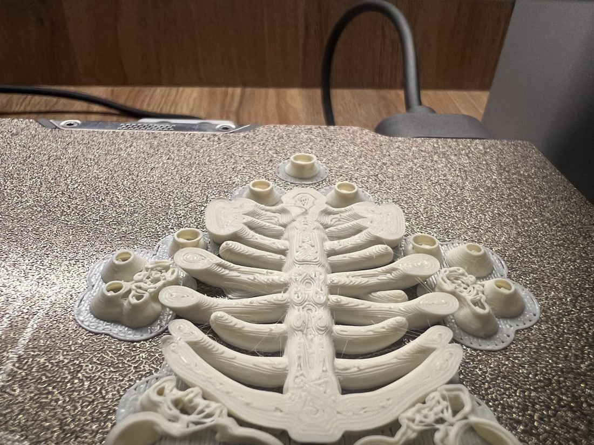
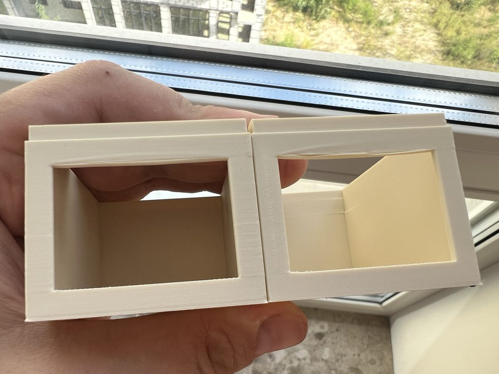
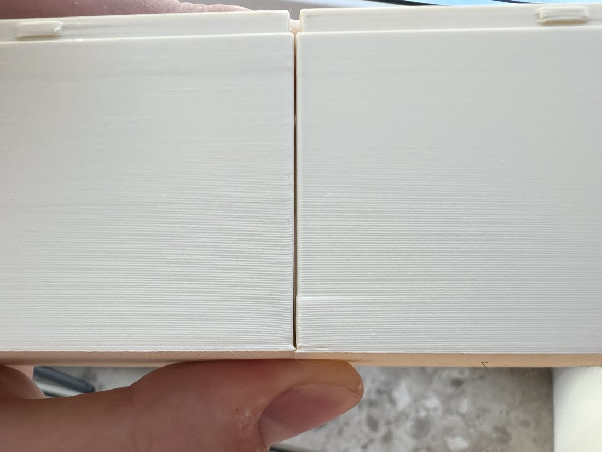
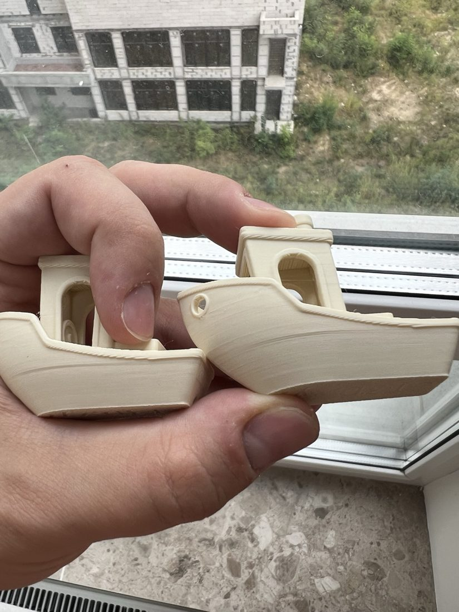
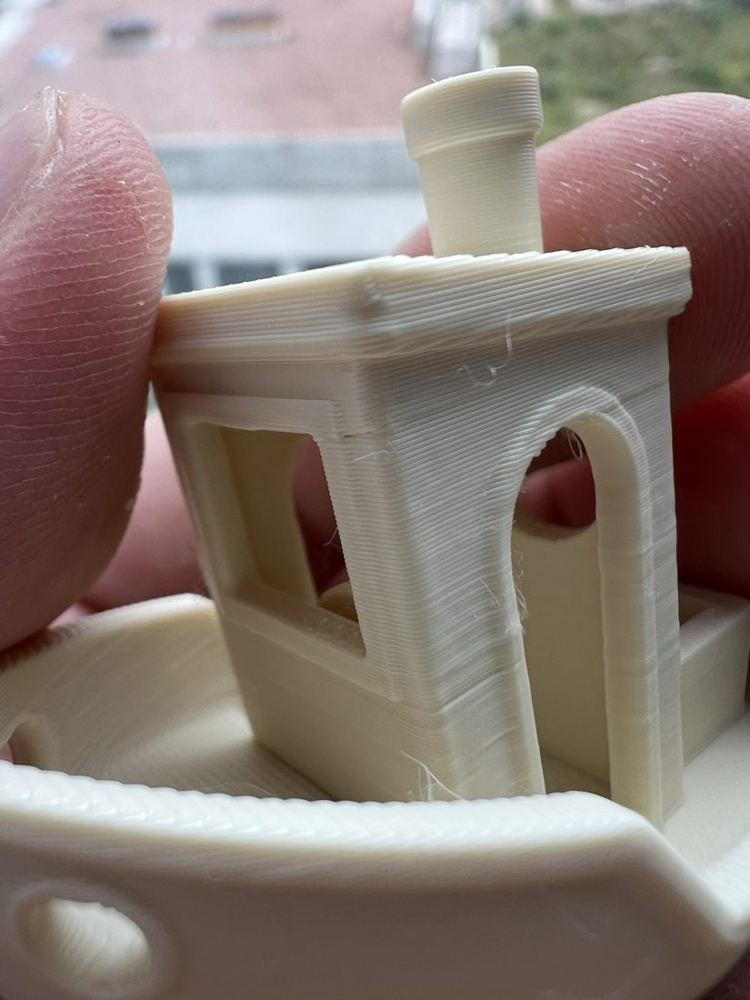
Мы ставим это каждой модели; цена всего пакета на 2-часовой печати — +4 % времени.
| Где | Поле | Значение | Зачем |
|---|---|---|---|
| Quality → Precision | Resolution | 0.004 | путь сопла повторяет меш |
| Quality → Precision | Slice gap closing radius | 0.01 | не маскирует Resolution |
| Quality → Precision | Arc fitting | вкл | в 2.4 раза меньше команд |
| Quality → Wall generator | Wall generator | Classic | поток калиброван под 0.42 |
| Quality → Advanced | Order of walls | inner/outer | нависания, перемычки; нужен для Precise wall |
| Quality → Advanced | Avoid crossing wall + Max detour length | вкл / 300 | нет капель и ниток через стенку |
| Strength → Top/bottom shells | Top surface pattern | Concentric / Monotonic | по форме верха |
| Filament → Cooling | Don't slow down outer walls | вкл | ровная видимая стенка |
| файл проекта | precise_outer_wall | 1 | наружная стенка точной ширины (поля в UI нет) |
| Quality → Seam | Seam position | Back / Aligned в угол | шов на скрытую сторону |
| окно отправки | Bed Leveling, Flow Dynamics Calibration, Timelapse | вкл | стол, PA, видео |
MVS ↔ все скорости. Поднять скорость в поле бесполезно, если упёрлись в MVS. Проверка — Preview → Speed / Flow.
Высота слоя ↔ MVS. Тоньше слой — меньше сечение линии, выше потолок мм/с при том же MVS. Время всё равно растёт: слоёв больше.
Температура ↔ MVS. Горячее сопло плавит больше, поэтому MVS калибруется на уже выбранной температуре, а температуру берут по верху диапазона.
Поток ↔ размеры. Сначала Flow ratio, потом Shrinkage: поток меняет измеряемый размер.
Время слоя ↔ скорость ↔ блеск. Короткий слой замедляется, пластик горячее — глянец. Лечение: Don't slow down outer walls.
Время слоя ↔ вентилятор. Обдув считается по времени слоя, поэтому скачок времени слоя = полоса блеска. Лечение: обдув min = max.
Состав стола ↔ полосы. Кончилась соседняя деталь — время слоя упало (32 → 14 с) — полоса на оставшихся. Лечение: одна деталь на стол или By object.
Order of walls ↔ нависания и перемычки. Наружная первой (outer/inner, inner/outer/inner) хуже держит нависания и перемычки над окнами. Precise wall работает только при inner/outer.
Wall loops ↔ линия пола ↔ гладкость. Третья стенка убирает валик у полов, но гладкий борт под ним выглядит хуже.
Infill/Wall overlap и Ensure vertical shell thickness ↔ линия пола. Оба привязывают стенки к сплошным слоям. Ослабить — меньше полоса, слабее деталь.
Seam Aligned ↔ смена контура. На окнах и резьбе шов прыгает и усиливает бугры.
Resolution ↔ Slice gap closing radius. Работают только парой: большой radius съедает эффект маленькой resolution.
Arc fitting ↔ перегрузка. Без дуг команд в 2.4 раза больше — ровно тот режим, где принтер пропускает экструзию.
Arachne ↔ калибровка потока. Arachne кладёт линии переменной ширины, а поток откалиброван под 0.42: мелкие детали хуже.
Ширина линии ↔ число стенок. 0.5 на стенках — на ту же толщину меньше периметров и меньше gap fill. Масштаб модели меняет кратность.
Top Z distance ↔ высота слоя. При 0.12 Fine зазор равен одному слою и приваривается; PETG нужен больший зазор, чем PLA.
Height range ↔ поддержки. Диапазон высот включает независимые слои поддержки: +3–5 % времени, модели не вредит.
Support blocker ↔ соседние детали. Блокировщик убирает всё в своей коробке, включая нужные поддержки.
Slow down for overhangs ↔ ровный блеск. Выключить ради одинаковой скорости — и сломается скругление у стола.
Ретракт ↔ дырки. Больше ~1.5 мм — дырочки в стенке, похожие на влагу.
Ironing ↔ следующий слой. Крошечный поток разглаживания опустошает сопло.
Кайма ↔ тип принтера. Советы для неподвижного стола (X1, P1) не переносятся на A1 mini.
Avoid crossing wall ↔ полости. Обходит стенки, но окна и каналы пересекает по воздуху.
| Wall / wall loops / perimeter | стенка, периметр — замкнутый контур слоя; outer — видимая наружная, inner — внутренние |
| Line width | ширина дорожки пластика |
| Shell (top/bottom) | сплошные слои сверху и снизу |
| Sparse infill / internal solid infill | разреженное заполнение внутри / сплошное внутри (под верхом, у полов) |
| Gap fill (Gap infill) | мелкие экструзии, заполняющие щели между стенками |
| Seam / scarf seam | шов — начало и конец контура / наклонный шов |
| Overhang / bridge | нависание (линия частично в воздухе) / мост (линия между двумя опорами) |
| Support interface | плотная «крыша» поддержки, на которой лежит модель |
| Brim / skirt / brim ears | кайма вплотную к детали / юбка вокруг / ушки на углах |
| MVS (Max volumetric speed) | максимальный расход пластика, мм³/с |
| Flow ratio | коэффициент потока |
| PA / Flow Dynamics | pressure advance: компенсация давления в сопле на разгонах и торможениях; A1 mini меряет сам |
| Retraction / Z hop / wipe | откат филамента перед переездом / подъём сопла / протирка |
| VFA | vertical fine artifacts — вертикальные полоски от резонанса на определённых скоростях |
| Ringing / ghosting | эхо углов, затухающее вдоль стенки |
| Z-banding | горизонтальные полосы с постоянным шагом по высоте |
| Elephant foot | выступ первых слоёв у стола |
| Floor line («линия пола») | полоса на стенке на высоте внутреннего сплошного слоя |
| Heat creep | пластик размягчается выше зоны плавления, подача слабеет |
| Modifier / height range | объём / полоса высот со своими настройками |
| Classic / Arachne | генераторы стенок: постоянная / переменная ширина линий |